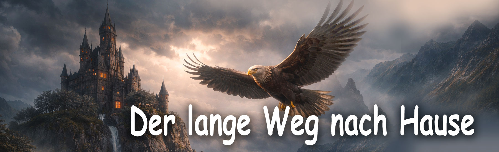

Märchen von Philomur, dem Kater
getreu aufgezeichnet von seinem treuen Bewunderer — Michel, der Rattenjunge

Willkommen in der Welt der Geschichten aus dem Wollknäuel!
Der lange Weg nach Hause
Kapitel 1 | Kapitel 2 | Kapitel 3 | Kapitel 4 | Kapitel 5 Kapitel 6 EPILOG
KAPITEL 1 — Die Entführung
Es war ein so klarer und friedlicher Tag, dass es schien, als könne unmöglich etwas Schlimmes geschehen. Die junge Gans Clara saß im weichen, warmen Gras und häkelte einen Spitzenkragen für ihr neues Kleid. Leise vor sich hin summend behielt sie dabei ihren Sohn im Auge — das Gänschen Phil.
Clara liebte ihn nicht einfach — sie vergötterte ihn von ganzem Herzen. Er war ihr Erstgeborener, lange ersehnt und unendlich kostbar. Und wie alle Mütter träumte Clara davon, ihm das Wichtigste zu schenken: Neugier und die Liebe zum Lernen. Sie war überzeugt, dass ein Kind, das die Welt versteht, freundlicher, klüger und stärker wird.
Phil erwies sich als ein außergewöhnlich begabtes kleines Gänschen. Man stelle sich vor: Schon an seinem allerersten Tag lernte er mehrere Buchstaben, und wenige Tage später setzte er mit Holzbuchstaben bereits Wörter zusammen! Er nahm Wissen so schnell auf, dass Clara kaum Zeit hatte, sich über jedes neue „Mama, schau!“ zu freuen.
Um seine Neugier zu fördern, kaufte Clara Phil einen Kinder-Globus mit Licht im Inneren, damit er abends Kontinente, Ozeane und Länder studieren konnte; außerdem ein echtes Schulmikroskop, um die kleinsten Wunder der Natur zu betrachten — Federn, Grashalme, Insektenflügel.
Stundenlang konnte Phil am Globus sitzen, das Licht einschalten und die Namen der Länder flüstern, die kaum in seinen kleinen Kopf zu passen schienen. Und das Mikroskop wurde sein bester Freund: Heute jagte er wieder Heuschrecken, um ihre Beine und Fühler zu untersuchen. Clara sah ihrem Sohn zu und dachte: „Wie glücklich ich bin. Er ist so klug… so voller Licht…“
Doch plötzlich wurde das Licht dunkler. Zuerst dachte sie, eine Wolke habe die Sonne verdeckt. Aber es war ein Schatten. Der Schatten weiter, schwebender Flügel erschien lautlos. Lautlos erschien er — wie ein Blitz ohne Donner. Ein Steinadler. Er stürzte aus dem Himmel herab wie ein schwarzer Pfeil. Seine Krallen schlossen sich um Phil — schneller, als Clara Luft holen konnte.
„Phil!!!“ schrie sie. Clara stürzte vor. Sie kämpfte verzweifelt, mit der ganzen Kraft einer Mutter, die ihr Kind schützt. Sie hackte nach dem Adler, schlug mit den Flügeln, klammerte sich an seine Federn — doch es war vergebens.
„Hör auf, du törichte Gans!“ donnerte der Adler, seine Stimme ließ die Luft erbeben. „Noch eine Bewegung — und ich zerdrücke dein Küken direkt vor deinen Augen!“
Clara erstarrte. Ihre Beine gaben nach. Sie fiel zu Boden, zitternd, flehend mit den Augen — und doch wissend, dass sie machtlos war. Der Adler hob Phil höher, packte fester zu und stieg in den Himmel auf.
Das Letzte, was Phil hörte, war der verzweifelte Schrei seiner Mutter, direkt aus ihrem Herzen gerissen: „Phiiiil!!!“ Das grelle Sonnenlicht blendete ihn, und der vertraute Bauernhof verschwand unter ihm, wurde zu einem winzigen Punkt in der Ferne. So begann die schwierigste Geschichte im Leben eines kleinen, neugierigen Gänschens.
Zum Seitenanfang
KAPITEL 2 — Der Erbe des Adlers
Phil fühlte, als hätte sich die Luft um ihn in eine feste Wand aus Eis verwandelt. Der Wind schlug ihm ins Gesicht, kühlte seinen Hals und riss die letzten Kräfte aus seiner Brust. Seine kleinen Beine zitterten, und die scharfen Krallen des Adlers bohrten sich in seinen weichen Körper. Doch Phil weinte nicht. Er wollte diesem furchterregenden Adler nicht die Genugtuung geben.
Sie flogen lange — so lange, dass Phil jedes Gefühl dafür verlor, wo Osten und Westen waren und wo sich sein Bauernhof befand. Alles, was er sah, war der Himmel, endlos und gleichgültig. Dann ließ der Wind plötzlich nach. Der Adler begann zu sinken.
Sie landeten auf dem hohen Turm eines dunklen Schlosses, das auf der Spitze einer steilen Klippe stand. Der Turm wirkte uralt und düster, als wäre er aus der Nacht selbst gewachsen. Der Adler setzte Phil auf den kalten Steinboden. Das Gänschen taumelte, blieb aber auf den Beinen. Der Räuber breitete die Flügel aus — die Luft erzitterte — und sprach mit einer Stimme, so kalt wie ein Winterfluss: „Küken. Ich habe dich lange beobachtet.“
Phil zuckte zusammen. Beobachtet? Wann? Warum?
„Du bist klug. Du bist mutig. Du hast nicht geweint, selbst als ich dich in den Himmel trug. Das war die erste Prüfung — und du hast sie bestanden. Du beeindruckst mich.“ Er senkte den Kopf so nah, dass Phil den heißen Atem des riesigen Vogels spüren konnte. „Ich bin der Adler. Herr der Lüfte. Und ich habe dich zu meinem Erben erwählt.“
Phil blinzelte erstaunt. „E–Erben?..“
„Ja. Nicht jeder ist würdig, meine Linie weiterzuführen. Ich habe gesehen, wie du lernst, wie du denkst, wie du liest… Verstand und Wille — das macht einen würdigen Adler aus. Du hast außergewöhnliches Glück. Aber du musst beweisen, dass du dieser großen Mission würdig bist.“
Phil schwieg. Er war zu klein, um die volle Bedeutung der Worte des Adlers zu begreifen. Doch ein Gefühl verstand er klar: Der Adler wollte ihm eine Zukunft geben… und ihm dafür seine Vergangenheit nehmen.
Als hätte er seine Gedanken gelesen, fuhr der Adler fort: „Vergiss deine törichte Mutter und diesen Bauernhof. Du hast es selbst gesehen, Küken: Sie hat dich im Stich gelassen. Sie ist zurückgewichen. Sie hat sich selbst über dich gestellt.“
Phil presste die Flügel an seinen Körper. Er wusste — das war eine Lüge. Doch die Worte des Adlers waren wie schwere Steine: Sie drückten, brachen und erstickten. „Von jetzt an bist du ein Adlerjunges. Von heute an wirst du von mir lernen: hoch zu fliegen, weit zu denken und ohne Mitleid zu jagen. Ich werde dich zum Herrn der Lüfte erziehen.“
Er beugte sich näher und zischte Phil ins Ohr: „Aber du musst mir ohne Frage gehorchen. Denn ich — ich allein und niemand sonst — weiß, wie man ein Adlerjunges erzieht.“
Phil schluckte. Sein Herz schlug wie eine kleine Trommel. Er zitterte, hielt sich aber zusammen und weinte nicht. Er spürte, dass etwas Großes vor ihm lag — etwas Neues und zugleich Furchteinflößendes. In seiner kleinen Brust lebte die Erinnerung an seine Mutter, seinen Bauernhof, die Wärme. Diese Erinnerung ließ ihn nicht zerbrechen. Und doch zog ihn die Zukunft an — und machte ihm Angst.
Der Adler sah ihn mit kaltem, selbstsicherem, königlichem Blick an. Er war absolut überzeugt: Dieses kleine Gänschen würde zu allem werden, was er wollte.
Zum Seitenanfang
KAPITEL 3 — Ausbildung zum Adler
Von diesem Tag an veränderte sich Phils Leben völlig. Der Morgen begann mit einem scharfen Befehl: „Aufstehen, Adlerjunges! Der Unterricht wartet!“ Phil zuckte bei der harten Stimme zusammen, stand aber schnell auf — er wollte den Adler nicht enttäuschen. Er versuchte, aufrecht zu stehen wie ein echtes Adlerjunges, obwohl seine kleinen Beine vor Kälte und Angst zitterten.
Flüge über alte Welten
Zuerst war es schön. Der Adler trug Phil hoch in den Himmel — dorthin, wo der Wind so laut singt, dass er die Gedanken übertönt. Von oben sah Phil die ägyptischen Pyramiden, sumerische Zikkurate, Tempel des alten Indien, Straßen und Städte. Die Welt unter ihnen wirkte riesig, wie ein endloses Buch.
„Ein Adler muss die Geschichte der Welt kennen“, sagte der Adler streng. „Wer die Vergangenheit nicht kennt, ist nicht würdig, die Gegenwart zu beherrschen.“ Und er sprach von Völkern, Göttern, Sternen und Legenden — schnell, scharf, aber erstaunlich präzise.
Phil hörte mit halb geöffnetem Schnabel zu. Er liebte es zu lernen — das hatte er schon immer. Doch noch nie war so viel Wissen auf einmal über ihn hereingebrochen. Nach der Geschichte folgten Unterricht in Latein, Altgriechisch, sogar Sanskrit. Phil wiederholte die Wörter mit leiser, piepsiger Stimme — aber beharrlich. „Falsch! Noch einmal!“ rief der Adler. Und Phil wiederholte. Immer wieder.
Lehren der Weisheit: Mathematik, Physik, Chemie, Biologie
Dann kamen die Lektionen, die Phil am meisten liebte. Der Mathematikunterricht. Der Adler schrieb eine seltsame Zeile auf eine Steinplatte:
„Das ist ein magischer Ring — Eulers Formel“, sagte er. „Wer ihre Bedeutung versteht, versteht die Gesetze des Universums. Sie ist ein Schlüssel zu den größten Geheimnissen der Existenz. Merke sie dir. Zuerst — einfach als Muster.“
Phil verstand nicht, was exp war oder was π oder i bedeuteten, doch er fühlte, dass diese Zeile unglaublich schön war — ausgewogen, harmonisch, beinahe lebendig. Und vor allem — wer sie versteht, kann alles verstehen. Und Phil wollte verstehen.
Dann zeichnete der Adler verschlungene Linien und Symbole. „Das sind Maxwells Gleichungen. Sie beschreiben den Blitz, die Gesetze des Lichts, den Atem der Sterne.“ Phil starrte gebannt auf die Zeichen und sehnte sich danach, ihre verborgene Bedeutung zu verstehen.
Als Nächstes — Chemie. Der Adler zeichnete ein ordentliches Sechseck. „Das ist ein Benzolring. Seine Elektronen bilden eine gemeinsame Wolke. Dadurch ist der Ring außergewöhnlich stabil, und deshalb findet man ihn in uns, in Tieren, in der Süße der Beeren und im Duft der Kräuter.“ Phil staunte: Wie konnte ein winziger Ring sowohl in Büchern als auch in Blumen existieren?
Und in der Biologie zeigte der Adler eine Spirale: „Das ist DNA. Das Buch des Lebens. Wir erhalten es von unseren Vorfahren und geben es an jene weiter, die nach uns kommen. In ihm steht alles, was man braucht, um man selbst zu werden.“ Phil hörte zu — und spürte, dass die Welt groß, komplex und voller Geheimnisse war. Manchmal schien es sogar, als enthülle der Adler ihm echte Magie.
Lehren von Stärke und Schatten
Doch dann kamen die Jagdlektionen. Und etwas in Phil zog sich zusammen, schrumpfte, schmerzte. Der Adler lehrte ihn: wie man von oben schaut, wie man Beute auswählt, wie man wie ein Stein herabstürzt, wie man schnell, heftig, ohne Zweifel oder Mitleid tötet. „Mitleid ist Schwäche!“ wiederholte er. „Wenn du überleben willst — sei erbarmungslos!“
Phil versuchte es. Wirklich. Aber jedes Mal verkrampfte sich sein Herz vor Angst und Schmerz. Er sah zitternde Geschöpfe, hörte ihr Piepsen — und konnte es nicht. „Wenn ich nicht jage, werde ich nicht stark… Aber muss Stärke immer grausam sein?“ Und er erinnerte sich an die Worte seiner Mutter: „Güte ist auch Stärke.“
Er wollte stark sein wie der Adler. Klug, wissend, mutig. Aber er wollte auch wie seine Mutter sein: gut, warm, echt. Seine Seele wurde in zwei Teile gerissen.
Die erste große Frage
Nach einer besonders schweren Lektion sprach der Adler wieder mit kalter Stimme: „Adler sind die Besten. Wir sind geboren, um zu herrschen. Und Gänse… Schmutz. Schwäche. Schlamm. Du musst dich über sie erheben! Über alle!“
Phil schwieg lange. Er legte seine Flügel ordentlich an den Körper und fragte leise: „Warum… ist es besser, ein Adlerjunges zu sein als ein Gänseküken?“
Der Adler erstarrte. „Was hast du gesagt?“
„Was macht Gänse schlechter als Adler?“ wiederholte Phil zitternd, nun mutiger. „Meine Mama ist freundlich. Sie liebt mich. Sie hat mir Lesen beigebracht… Sie hat mir Bücher gekauft… Sie fliegt — nur nicht so hoch. Und Gänse… sie sind nicht schwach. Sie sind einfach… anders.“
Die Worte hingen in der Luft wie eine leichte Feder. Der Adler explodierte: „Anders?! Gänse sind niedrig! Sie werden die Welt niemals so sehen wie ich! Und du musst über allen stehen — stark, grausam, ohne Zweifel!“
„Ist Stärke… alles?“ flüsterte Phil.
Strafe
Das war der letzte Tropfen. Der Adler schlug mit dem Flügel — so heftig, dass Phil auf die Steine fiel. Er packte ihn am Genick und schleifte ihn hinunter — in den unterirdischen Keller.
„Du denkst zu viel, elendes Küken! Es gibt einen perfekten Ort zum Nachdenken. Sitz dort. Denk in Stille. Kälte und Dunkelheit werden dir beibringen, welche Fragen hier erlaubt sind.“ Er warf Phil in eine kalte steinerne Kammer und schlug die schwere Eisentür zu.
Es wurde dunkel. Still. Kalt. Phil saß da und umarmte mit seinen Flügeln die Knie. Er weinte nicht — Weinen würde den Adler nur noch wütender machen. Doch in seinem Inneren tobte ein echter Kampf: „Ich will stark sein… aber nicht so. Ich will klug sein… aber nicht grausam. Mama sagt: Güte ist Stärke. Der Adler sagt: Schwäche. Wem soll ich glauben?..“
Er schloss die Augen. Er saß in der Dunkelheit — klein, verwirrt, aber denkend. Und genau dort, in der Schwärze des Kellers, begann der Weg seiner eigenen Gedanken. Nicht die Gedanken eines Adlers. Nicht die Gedanken einer Gans. Seine eigenen.
Zum Seitenanfang
KAPITEL 4 — Ein Freund in der Dunkelheit
Die Dunkelheit im Schrank war so dicht, dass sie lebendig wirkte. Sie saß neben ihm, atmete in den Ecken, raschelte irgendwo hinter seinem Rücken. Doch Phil weinte nicht. Er saß still da, umarmte sich mit den Flügeln und hörte seinem kleinen Herzen zu: „Ich bin stark… Ich habe keine Angst… Na ja… fast keine Angst…“
Plötzlich — ein leises Rascheln. Sehr vorsichtig. Als würde jemand Winziges heranschleichen und jede Diele meiden. Phil erstarrte. Das Rascheln kam näher… Und direkt an seinen Füßen flüsterte eine kleine, lustige Stimme: „Piep-piep… Bist du da? Lebst du noch?“
Phil zuckte zusammen. „W-wer ist da?“
„Ach, niemand… nur die alte Ratte Elisabeth zu Diensten!“ flüsterte eine dünne, selbstbewusste Stimme. Und dann spürte er etwas Kleines, Warmes und Pelziges, das sich an ihn drückte. „Hab keine Angst“, sagte Elisabeth. „Ich beiße nicht. Na ja… fast nie.“
Phil atmete erleichtert auf. „Ich habe keine Angst… es ist nur… so dunkel…“
„Im Dunkeln hat jeder Angst“, sagte die Ratte mit Nachdruck. „Sogar große, furchterregende Adler. Sie tun nur so, als hätten sie keine.“ Phil lächelte leise — zum ersten Mal seit langer Zeit.
⭐ Gespräche in der Dunkelheit
„Wie bist du hierher gekommen?“ fragte Elisabeth und setzte sich neben ihn.
„Der Adler… hat mich bestraft“, flüsterte Phil. „Ich habe gefragt, warum Gänse schlechter sind als Adler… Und er wurde wütend.“
Die Ratte schnaubte: „Er wird immer wütend, wenn jemand anders denkt als er. So ist er eben.“
Phil seufzte: „Er ist stark… und klug… Manchmal denke ich… vielleicht hat er recht?“
Elisabeth berührte seinen Flügel mit ihren Schnurrhaaren — fast wie eine Mutter. „Stark und klug ist gut“, sagte sie. „Aber du bist auch klug. Und stark. Und vor allem — du bist freundlich. Das ist das Schwerste und Wichtigste von allem.“
Phil dachte einen Moment nach. „Woher weiß man, was richtig ist?“
„Dein Herz sagt es dir“, antwortete die Ratte schlicht. „Du musst nur zuhören. Ich wollte auch einmal wie die Adler sein: schnell, stolz. Aber dann habe ich verstanden — ich bin eine Ratte. Und Ratten können weise sein. Wir sind klein… aber wir überleben.“
Ein warmer kleiner Funke entzündete sich in Phils Brust. „Glaubst du… ich kann ein Gänseküken sein und… stark?“
„Natürlich!“ Elisabeth hob stolz die Nase. „Stärke sind keine Krallen. Und keine Grausamkeit. Stärke ist, seinen eigenen Weg zu wählen… und ihn zu gehen.“ Diese Worte fielen wie ein Samen in Phils Herz und begannen sofort zu wachsen.
Ein Geschenk in der Dunkelheit
Elisabeth raschelte in der Ecke. Sie zog etwas hervor, schleppte es, schnaufte… Und plötzlich fiel ein knuspriges Stück trockenes Brot vor Phils Füße. „Hier“, sagte sie. „Ich habe es aus der Küche gestohlen. Schwer, aber lecker. Du brauchst es mehr. Du bist klein und frierst.“
Phils Augen wurden groß. „Für mich?..“
„Für wen denn sonst?“ schnaubte die Ratte. „Hier ist sonst niemand.“ Das trockene Brot war hart, aber gut, mit einer süßen Note, wie der Rand eines Honigkuchens. Es wärmte ihn von innen. „Danke…“ flüsterte Phil.
„Bedank dich nicht“, schniefte Elisabeth. „Ich bin auch einsam. Und zu zweit ist es immer besser als allein. Sogar in einem Schrank.“
Hoffnung
Eine lange, kalte Nacht verging. Phil dachte nach — über den Adler, über seine Mama, über Elisabeths Worte. Und er verstand zwei wichtige neue Worte: Ich — selbst. Ich — bin nicht allein.
Er hatte ein kleines Herz, das Gut von Grausamkeit unterscheiden konnte. Und jetzt — hatte er einen Freund. Durch den Spalt der Tür kam eine leise Stimme: „Halte durch, Kleiner… ich bin bei dir.“ So lernte Phil: Selbst in der Dunkelheit kann man Licht finden. Manchmal ist Licht einfach eine kleine Ratte mit weisen Augen.
Zum Seitenanfang
KAPITEL 5 — Die Prüfung, die Wut und die Flucht
Der Morgen war düster und kalt. Der Wind peitschte die Mauern der Burg wie nasse Peitschen. Die Schranktür sprang mit einem ohrenbetäubenden Knarren auf — der Adler stand im Türrahmen, dunkel, finster, gefährlich. Elisabeth war rechtzeitig verschwunden — sie war wie ein Schatten in ihre Spalte geschlüpft.
„Küken“, sagte er mit eisiger Stimme. „Ich habe zu hoch von dir gedacht. In deiner Erziehung steckt ein Fehler. Und ich muss ihn korrigieren.“ Er setzte Phil vor sich auf den Boden. „Heute wirst du richtig jagen. Du wirst zeigen, dass du kein Gänseküken bist. Du wirst zeigen, dass du ein Adler bist.“
Phil spürte, dass etwas nicht stimmte. Die Stimme war zu leise. Zu ruhig. Das bedeutete gewöhnlich nur eines: Gefahr. Der Adler führte ihn in eine große steinerne Halle. Die Wände waren von uralten Kratzspuren, Flecken der Zeit und Krallenabdrücken bedeckt.
„Heute ist eine besondere Lektion“, sagte der Adler. „Du wirst beweisen, dass du ein Adler bist. Ich werfe dir Beute zu. Du musst sie packen und töten. Ohne Mitleid. Ohne Zögern. Sonst wirst du meine Beute.“ Er streckte seine Klaue aus und schleuderte ein graues Bündel.
Das Bündel bewegte sich. Es zitterte. Phil spannte sich an — und plötzlich stürzte sein Herz in die Tiefe. Es war Elisabeth. Er flüsterte: „Sie?..“
Der Adler nickte. „Ja. Diese Ratte ist viel zu frech. Zu schlau. Sie kennt alle Löcher. Sie stiehlt. Sie ist Beute. Deine Beute.“
Elisabeth sah Phil direkt an. Ihre Augen glänzten — aber nicht vor Angst. Nur mit einer stillen Bitte: „Tu es nicht…“
Phil machte einen Schritt. Dann noch einen. Sein Herz schlug so laut, dass es seinen Atem übertönte. Der Adler beobachtete ihn, nach vorn gebeugt, die Flügel vor Spannung bebend. Er wartete. Und in diesem Moment verstand Phil alles. Das war keine Jagdlektion. Es war eine Lektion in Grausamkeit. Eine Lektion im Gehorsam. Eine Prüfung — ob er zerbrechen und wie der Adler werden würde.
Phil hob den Kopf, sah dem Adler direkt in die Augen und sagte: „Nein.“
„Was hast du gesagt?!“ brüllte der Adler.
Phil zitterte, aber er blieb standhaft. „Ich will sie nicht töten. Sie… ist meine Freundin.“
In genau diesem Moment schoss Elisabeth zur Seite — und Phil verlangsamte absichtlich seine Bewegung, um ihr Zeit zu geben. Sie schlüpfte zwischen seinen Füßen hindurch, tauchte in eine Spalte in der Wand und verschwand.
Der Adler explodierte. „FEIGLING!!! WERTLOSER WURM! SCHWÄCHLING!!!“ Der Wind seiner Flügel traf Phil und riss ihn zu Boden. Die Augen des Adlers brannten vor Wut. Er packte Phil mit den Krallen, schleifte ihn über die Steine und warf ihn grob zurück in den Schrank. „DU BLEIBST hier, bis du lernst, ein Adler zu sein!!!“ brüllte er und schlug die Tür zu. Dunkelheit verschlang alles.
Ein Freund kehrt zurück
Phil setzte sich auf den kalten Boden. Sein Herz pochte, als wolle es entkommen. „Was, wenn ich falsch lag? Was, wenn ich gehorchen sollte?.. Aber er selbst sagte — sei stark. Und Stärke bedeutet auch, ‚Nein‘ sagen zu können…“ Er schloss die Augen — und spürte die Flügel seiner Mutter. Warm. Sanft. Liebevoll. Als flüsterten sie: „Du hast alles richtig gemacht.“
Ein Rascheln. Leise, vertraut. „Piep-piep-piep… ich bin hier.“ Elisabeth schlüpfte aus der Spalte — etwas zerzaust, aber unversehrt. Sie drückte sich an Phil. „Danke. Du hast mir das Leben gerettet.“ Sie zog ein großes knuspriges Stück Brot hervor. „Hier. Das hast du dir ehrlich verdient.“
Phil lächelte durch seine Tränen. „Aber was jetzt? Er hasst mich…“
„Das spielt keine Rolle“, sagte Elisabeth. „Er ist wütend, weil er nicht weiß, wie man freundlich ist. Du weißt es. Und das ist deine Stärke.“ Sie entfaltete ein Stück Papier. „Hier. Eine Karte. Ein alter Plan der Burg und der Wege. Damit kannst du unbemerkt entkommen.“ Ihre Augen glänzten. „Wir müssen heute Nacht fliehen. Während er schläft. Wenn du bleibst, wird er dich brechen.“
„Aber die Tür…“
„Die Tür ist mein Problem“, sagte die Ratte selbstbewusst. Elisabeth kletterte flink auf den riesigen rostigen Schlüssel. Sie stemmte ihre Pfoten dagegen. Begann mit aller Kraft zu drücken. „Eins… Zwo-oo… Nur noch ein bisschen!..“ Phil lehnte seine Schulter gegen die Tür. Das Metall ächzte und quietschte… Und endlich — Klick! Die Tür gab nach. Kalte Luft strömte herein — sie roch nach Freiheit.
Der Weg nach Hause
Elisabeth führte Phil durch den dunklen Gang zum alten Tor des Hofes. Sie breitete die Karte aus. „Hör gut zu, Kleiner. Hier sind die Löcher, Schluchten und Wege markiert. Das Wichtigste ist die Richtung.“ Sie zeigte mit der Pfote nach Osten. „Dort ist dein Zuhause.“
„Ich weiß… dort ist Mama.“
Dann tippte sie auf die andere Seite. „Aber du musst nach Westen fliegen.“ Phil verstand nicht. „Aber das ist… die falsche Richtung?..“
„Ja. Denn der Adler ist schlau. Er wird im Osten auf dich warten. Er ist ein Jäger. Er wird deine Route erraten.“ Die Ratte berührte sanft seinen Flügel. „Manchmal muss man, um nach Hause zu kommen… zuerst in die falsche Richtung fliegen.“
Phil sah auf die Karte. Klein. Erschöpft. Aber schon weise. „Also… wird die Reise lang?“
„Ja. Aber die richtige.“ Sie schmiegte sich an ihn. „Ich glaube an dich.“
„Und du?..“
„Ich habe meinen eigenen Weg“, sagte die Ratte. „Ich bin eine Ratte. Ich werde überleben. Aber du — flieg nach Hause. Dort warten sie auf dich.“
Phil beugte sich hinunter und berührte sanft ihren Kopf mit seinem Schnabel. „Danke…“
„Flieg. Bevor es zu spät ist.“ Er breitete die Flügel aus. Stieg in den Nachthimmel auf. Und zum ersten Mal seit langer Zeit flog er nicht auf Befehl — sondern dem Ruf seines Herzens folgend. Der Mond erleuchtete seinen Weg. Der Wind trug seine Flügel. Er flog nach Hause. Und unten, im Schatten der Burg, sah Elisabeth ihm nach und flüsterte: „Flieg, kleines Gänseküken. Flieg dorthin, wo man dich liebt.“
🌟 KAPITEL 6 — Der lange Weg nach Hause
Die Nacht war dunkel und dicht wie Samt. Doch Phil flog entschlossen — wohin der Wind ihn auch trug, sein kleines Herz wusste: Der Weg führte nach Hause. Er flog lange. Seine Flügel schmerzten, sein Rücken pochte, seine Füße krampften vor Schmerz. Aber Phil hielt nicht an. „Ich muss… Mama wartet…“
Der Schwanensee
Als es ganz dunkel wurde, landete Phil am Ufer eines großen Sees. Das Wasser glänzte wie Silber, und auf seiner Oberfläche glitten weiße Schwäne — majestätisch, kühl und stolz. Phil trat ins Wasser. Es erinnerte ihn an seinen eigenen Teich, in dem Mama Clara ihm das Schwimmen beigebracht hatte. Das Wasser nahm ihn sanft auf wie einen alten Freund.
Er schwamm näher — vielleicht konnten sie ihm den Weg zeigen? Doch die Schwäne warfen ihm nur hochmütige Blicke zu. „Eine Gans?“ „Nicht eine von uns.“ „Und kein Schwan. Lass ihn schwimmen.“ Und sie glitten in ihrem königlichen Schweigen davon und spritzten Wasser auf seinen Schwanz.
Phil nahm es ihnen nicht übel. Er verstand einfach: Nicht alle, die groß sind, sind freundlich. Und nicht alle, die klein sind, sind schwach. Er wählte den Weg in Richtung Wald.
Der flüsternde Wald
Der Wald begrüßte ihn mit dem Rascheln der Blätter und den Stimmen der Nacht. Die Kiefern standen wie dunkle Säulen, die Tannen flüsterten hoch oben, und die Schatten lebten ihr eigenes Leben. Doch Phil hatte keine Angst. Er war nicht mehr das kleine Küken, das der Adler entführt hatte. Er hatte Elisabeths Karte. Und noch wichtiger — er hatte sein eigenes Herz, das den Weg gewählt hatte.
Er flog lange. Manchmal landete er, zitternd vor Kälte unter einem Busch, und schloss die Augen… Doch jedes Mal erhob er sich wieder in die Luft. Als der Morgen kam, sah er von oben: vertraute Felder, einen vertrauten kleinen Weg, den alten Obstgarten und — den Geflügelhof.
Die Rückkehr
Der Hof war fast derselbe wie früher. Nur wirkte er stiller. Viel zu still. Beim alten Schuppen saß Clara. Sie war sehr alt geworden. Ihre Federn hatten ihren Glanz verloren, ihre Flügel hingen herab, ihr Blick war müde und leer. Sie strickte. Wie immer. Doch ihre Hände waren langsam und schwach. Sie blickte nicht mehr zum Himmel. Sie wartete nicht mehr.
Doch plötzlich hörte sie ein leises Geräusch — das sanfte Schlagen kleiner Flügel. Sie hob den Kopf. Phil stand vor ihr. Zerzaust, dünn, erwachsen. Aber lebendig.
„Mama…“, sagte er leise. „Ich bin es.“
Clara stand langsam auf. Sie berührte seinen Flügel — vorsichtig, ungläubig. Ja. Er. Lebendig. Und dann öffneten sich ihre Flügel von selbst. Sie hatte kaum noch Kraft — doch die Liebe gab sie ihr in einem einzigen Augenblick zurück. Sie umarmte ihn so, wie man nur jene umarmt, mit denen man nicht mehr gerechnet hatte. „Mein kleiner Junge… du bist zurückgekommen…“
Phil vergrub seinen Schnabel in ihren Federn. „Ich habe mir den Weg immer gemerkt. Weil du meine Mama bist. Und ein Herz kennt immer den Weg nach Hause.“
Der Geflügelhof erwachte zum Leben. Gänse schnatterten, Hühner liefen umher, Enten schlugen mit den Flügeln. Doch Clara hörte niemanden. Sie hielt ihren Sohn fest. Und Phil verstand: Das ist die wahre Höhe. Nicht der Himmel. Sondern die Liebe.
Zum Seitenanfang
✨ EPILOG — Für alle, die zurückkehren
Viele Tage vergingen — vielleicht auch Wochen. Der Hof lebte wieder sein eigenes Leben. Phil wuchs — schnell, stark und selbstbewusst. Manchmal stieg er hoch in den Himmel auf, so wie es der Adler ihn gelehrt hatte… Doch sein Herz erinnerte ihn sanft: „Flieg hoch — aber werde nicht grausam.“
Er erinnerte sich an die Lektionen des Adlers — an Stärke, Höhe und den scharfen Blick. Doch er erinnerte sich auch an etwas anderes: Die Starken müssen nicht grausam sein. Die Klugen müssen nicht hart sein. Und selbst derjenige, der höher fliegt als alle anderen, braucht jene, die unten auf ihn warten.
Abends erzählte er seiner Mutter von alten Welten, von Sternen, Pyramiden und den Winden der Wüsten. Und sie hörte ihm zu, so wie man auf das liebste Wunder blickt.
Eines Tages kam der Herr des Anwesens selbst auf den Hof — Wassili Woldemarowitsch. Er hörte Phils Geschichten mit großem Interesse und fragte dann: „Möchtest du weiter lernen? Ich kann dir die exakten Wissenschaften beibringen. Du bist dafür geschaffen.“ Phil stimmte freudig zu.
Manchmal fragte er seine Mutter: „Warum konnte ich zurückkommen?“ Clara lächelte. „Weil das Herz immer den Weg kennt. Selbst wenn das Zuhause im Osten liegt und du nach Westen geflogen bist. Erinnerung ist der Weg.“ Und Phil wusste: Wer geliebt wird, findet immer zurück. Und wer zurückkehrt, wird stärker.
🌿 Über Elizabeth
Irgendwo weit entfernt, in den alten Wurzeln eines Baumes, lebte die kluge Ratte Elizabeth. Lebendig, flink und zufrieden. Oft erzählte sie den kleinen Rattenkindern eine Geschichte: „Ich hatte einmal einen Freund. Ein Gänschen. Klein — aber mit einem großen Herzen. Er wurde nicht zum Adler, wie es der grausame Herr wollte. Er wurde er selbst. Und das ist das Schwerste und Mutigste von allem.“
Die jungen Ratten hörten mit offenem Mund zu. Und sie dachten, dass es das Wunderbarste auf der Welt ist, man selbst zu sein.
Ende 😊
Zum Seitenanfang
🌟 Fragen und Aufgaben für junge Leser
1. Worum geht es in diesem Kapitel? Erzähle die Geschichte in 3–5 Sätzen.
2. Wer ist die Hauptfigur in diesem Kapitel? Beschreibe sie: Aussehen, Charakter und Stimmung.
3. Wenn du der Hauptfigur eine Frage stellen könntest, welche wäre das? Schreibe sie auf — und versuche, sie aus der Sicht der Figur zu beantworten.
4. Welche Entscheidung hat jemand in diesem Kapitel getroffen? Stimmst du ihr zu? Was würdest du anders machen?
5. Finde 5–10 neue Wörter im Kapitel. Schreibe sie auf, schlage ihre Bedeutung nach und bilde mit jedem Wort einen Satz.
6. Wähle deine Lieblingsstelle oder deinen Lieblingsmoment. Warum ist er dir besonders aufgefallen?
7. Stell dir eine kurze zusätzliche Szene vor, die als Nächstes passieren könnte. Schreibe 3–6 Zeilen Dialog.
8. Gib diesem Kapitel einen neuen Titel. Erkläre, warum du ihn gewählt hast.
9. Wie hat dich dieses Kapitel fühlen lassen? Wähle drei Wörter (zum Beispiel: neugierig, besorgt, glücklich, überrascht) und erkläre deine Wahl.
10. Wähle eine Szene, die du am besten in Erinnerung behalten hast. Zeichne sie und füge kleine Details hinzu, die dir wichtig erscheinen.